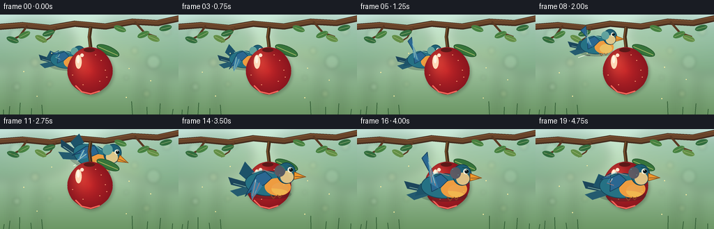
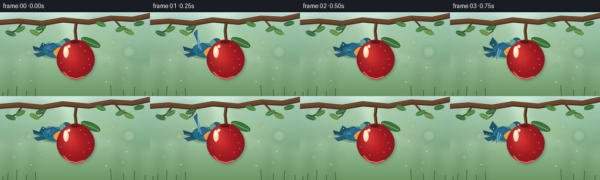

CODING AGENTS AS PIXEL WORLD MODELS
traex/GPT-5.6-Sol · dynamic_spatial_relationship_0038
点击播放 · 原生 RGB 像素
逐轮保存的候选
回放视频、检查图与代码变化。
每份候选均可单独播放。实际图片检查记录在下方工具轨迹中。
候选 01播放与检查图
点击播放 · 原生 RGB 像素


展开代码变化
--- 上一保存版本
+++ 本次保存版本
@@ -0,0 +1,314 @@
+from pathlib import Path
+import math
+import numpy as np
+from PIL import Image, ImageDraw, ImageFilter
+import artifact_io
+
+W, H, N = 256, 144, 20
+SS = 4
+rng = np.random.default_rng(38)
+
+
+def sc(v):
+ return int(round(v * SS))
+
+
+def pts(seq):
+ return [(sc(x), sc(y)) for x, y in seq]
+
+
+def ellipse(draw, box, fill, outline=None, width=1):
+ draw.ellipse(tuple(sc(v) for v in box), fill=fill, outline=outline, width=sc(width) if outline else 1)
+
+
+def polygon(draw, xy, fill, outline=None):
+ draw.polygon(pts(xy), fill=fill)
+ if outline:
+ draw.line(pts(list(xy) + [xy[0]]), fill=outline, width=sc(1), joint="curve")
+
+
+def line(draw, xy, fill, width=1, joint="curve"):
+ draw.line(pts(xy), fill=fill, width=sc(width), joint=joint)
+
+
+def smoothstep(x):
+ x = min(1.0, max(0.0, x))
+ return x * x * (3.0 - 2.0 * x)
+
+
+def bezier(p0, p1, p2, p3, t):
+ q = 1.0 - t
+ return (q**3 * p0[0] + 3*q*q*t*p1[0] + 3*q*t*t*p2[0] + t**3*p3[0],
+ q**3 * p0[1] + 3*q*q*t*p1[1] + 3*q*t*t*p2[1] + t**3*p3[1])
+
+
+def make_background(frame):
+ # Soft late-summer orchard, with a warm central pool of light.
+ yy, xx = np.mgrid[0:H*SS, 0:W*SS]
+ yn = yy / (H*SS - 1)
+ xn = xx / (W*SS - 1)
+ top = np.array([194, 226, 218], dtype=float)
+ bottom = np.array([108, 151, 101], dtype=float)
+ arr = top[None, None, :] * (1-yn[..., None]) + bottom[None, None, :] * yn[..., None]
+ glow = np.exp(-(((xn-.48)/.43)**2 + ((yn-.30)/.37)**2))
+ arr += glow[..., None] * np.array([20, 17, 5])[None, None, :]
+ arr = np.clip(arr, 0, 255).astype(np.uint8)
+ base = Image.fromarray(arr, "RGB").convert("RGBA")
+
+ # Blurred distant trunks, crowns and light bokeh.
+ distant = Image.new("RGBA", base.size, (0, 0, 0, 0))
+ d = ImageDraw.Draw(distant, "RGBA")
+ for x in [19, 57, 205, 236]:
+ sway = math.sin(frame*.08 + x)*.6
+ d.line([(sc(x+sway), sc(32)), (sc(x-4+sway), sc(144))], fill=(72, 92, 62, 55), width=sc(5))
+ crowns = [(16,45,44,28),(51,37,56,31),(210,39,57,33),(245,49,47,37),(176,27,42,23)]
+ for i,(x,y,rx,ry) in enumerate(crowns):
+ col = [(62,126,77,62),(50,111,68,54),(108,145,73,57)][i%3]
+ d.ellipse((sc(x-rx),sc(y-ry),sc(x+rx),sc(y+ry)), fill=col)
+ distant = distant.filter(ImageFilter.GaussianBlur(sc(7)))
+ base = Image.alpha_composite(base, distant)
+
+ bokeh = Image.new("RGBA", base.size, (0,0,0,0))
+ bd = ImageDraw.Draw(bokeh, "RGBA")
+ circles = [(23,29,9),(50,69,6),(220,68,10),(193,52,5),(80,24,4),(239,24,6),
+ (24,104,5),(210,114,5),(181,91,3),(71,100,4)]
+ for i,(x,y,r) in enumerate(circles):
+ twinkle = 0.86 + .14*math.sin(frame*.17+i)
+ col = (246,238,174,int(35*twinkle)) if i%2 else (232,255,226,int(42*twinkle))
+ bd.ellipse((sc(x-r),sc(y-r),sc(x+r),sc(y+r)), fill=col)
+ bokeh = bokeh.filter(ImageFilter.GaussianBlur(sc(2.2)))
+ return Image.alpha_composite(base, bokeh)
+
+
+def draw_branch_and_back_leaves(img, frame):
+ d = ImageDraw.Draw(img, "RGBA")
+ # Main overhead branch, layered for rounded painterly bark.
+ branch = [(-8,18),(32,15),(72,19),(107,13),(151,17),(190,10),(226,12),(267,3)]
+ line(d, branch, (67,43,29,255), 9)
+ line(d, branch, (105,68,42,255), 5)
+ line(d, [(-5,15),(34,12),(73,16),(108,10),(151,14),(190,7),(224,9),(263,1)], (153,102,61,150), 1)
+ # Twigs.
+ line(d, [(39,16),(28,31),(14,38)], (88,55,34,255), 3)
+ line(d, [(193,10),(207,26),(224,32)], (91,57,35,255), 3)
+ line(d, [(81,18),(72,33),(61,40)], (93,59,36,220), 2)
+ # Leaves around the branch; tiny movement gives life but preserves composition.
+ leaves = [(18,36,-20),(34,29,25),(59,35,-28),(70,27,18),(205,29,25),(220,34,-20),(238,19,14),(172,20,-22)]
+ for i,(x,y,a) in enumerate(leaves):
+ dx = math.sin(frame*.12+i*1.8)*.7
+ dy = math.cos(frame*.1+i)*.35
+ rx, ry = (9,4.2)
+ # Rotated ellipse as a small transparent sprite.
+ leaf = Image.new("RGBA", (sc(24),sc(18)), (0,0,0,0))
+ ld = ImageDraw.Draw(leaf,"RGBA")
+ color = [(49,108,61,255),(69,128,64,255),(98,142,70,255)][i%3]
+ ld.ellipse((sc(3),sc(5),sc(21),sc(13)), fill=color)
+ ld.line((sc(5),sc(9),sc(20),sc(9)), fill=(176,188,103,170), width=sc(.6))
+ leaf = leaf.rotate(a + math.sin(frame*.1+i)*2, resample=Image.Resampling.BICUBIC, expand=True)
+ img.alpha_composite(leaf, (sc(x+dx)-leaf.width//2,sc(y+dy)-leaf.height//2))
+
+
+def apple_mask():
+ mask = Image.new("L", (W*SS,H*SS), 0)
+ md = ImageDraw.Draw(mask)
+ cx, cy = 129, 81
+ outline = []
+ # Asymmetric, gently lobed apple silhouette.
+ for k in range(160):
+ a = 2*math.pi*k/160
+ rx = 31.0 * (1 + .045*math.cos(2*a))
+ ry = 34.0
+ x = cx + rx*math.cos(a)
+ y = cy + ry*math.sin(a)
+ # Narrow shoulder notch and subtle tapered base.
+ if math.sin(a) < -.58:
+ x += (2.5 if math.cos(a)>0 else -2.5) * (-math.sin(a)-.58)
+ if math.sin(a) > .65:
+ x = cx + (x-cx)*(1-.12*(math.sin(a)-.65)/.35)
+ outline.append((sc(x),sc(y)))
+ md.polygon(outline, fill=255)
+ return mask
+
+APPLE_MASK = apple_mask()
+
+
+def draw_apple(img, frame, foreground_bird=False):
+ d = ImageDraw.Draw(img, "RGBA")
+ # Stem is always tied visibly to the branch.
+ line(d, [(130,17),(128,32),(130,49)], (70,47,27,255), 5)
+ line(d, [(129,18),(127,32),(129,47)], (148,100,54,210), 1)
+ # A leaf tucked behind the fruit.
+ leaf = Image.new("RGBA", (sc(42),sc(26)), (0,0,0,0))
+ ld = ImageDraw.Draw(leaf,"RGBA")
+ ld.ellipse((sc(3),sc(7),sc(38),sc(20)), fill=(54,116,58,255), outline=(39,87,46,255), width=sc(1))
+ ld.line((sc(5),sc(14),sc(36),sc(14)), fill=(164,181,89,210), width=sc(1))
+ leaf = leaf.rotate(-24 + math.sin(frame*.1)*1.2, Image.Resampling.BICUBIC, expand=True)
+ img.alpha_composite(leaf, (sc(131),sc(31)))
+
+ # A faint cast shadow behind the apple makes its initial occlusion unmistakable.
+ shadow = Image.new("RGBA", img.size, (0,0,0,0))
+ shmask = APPLE_MASK.filter(ImageFilter.GaussianBlur(sc(2.3)))
+ shadow_color = Image.new("RGBA", img.size, (33,24,20,72))
+ shadow.alpha_composite(Image.composite(shadow_color, Image.new("RGBA",img.size), shmask))
+ img.alpha_composite(shadow, (sc(2),sc(2)))
+
+ yy, xx = np.mgrid[0:H*SS,0:W*SS]
+ # Rich red skin with directional light from upper left.
+ nx=(xx/SS-129)/31.0; ny=(yy/SS-81)/34.0
+ light=np.exp(-(((nx+.42)/.46)**2+((ny+.42)/.65)**2))
+ edge=np.clip(np.sqrt(nx*nx+ny*ny),0,1)
+ r=188+46*light-49*edge
+ g=34+31*light-12*edge
+ b=38+17*light-7*edge
+ skin=np.stack([r,g,b,np.full_like(r,255)],axis=2).clip(0,255).astype(np.uint8)
+ fruit=Image.fromarray(skin,"RGBA")
+ fruit.putalpha(APPLE_MASK)
+ img.alpha_composite(fruit)
+ ad=ImageDraw.Draw(img,"RGBA")
+ # Lobed top dimple, gleam, tiny lenticels, and reflected lower rim.
+ ellipse(ad,(120,48,136,54),(92,25,24,125))
+ ellipse(ad,(108,58,117,78),(255,218,183,105))
+ ellipse(ad,(110,59,114,70),(255,245,226,175))
+ ellipse(ad,(115,56,120,61),(255,228,205,110))
+ line(ad,[(108,102),(117,111),(130,114),(143,110)],(248,104,91,75),2)
+ for i,(x,y) in enumerate([(145,66),(151,80),(143,96),(119,101),(104,87),(137,58),(153,90)]):
+ ellipse(ad,(x-.7,y-.45,x+.7,y+.45),(255,173,127,105))
+
+
+def make_bird_sprite(wing_phase, blink=False):
+ # Native bird is approximately 78x70 px inside a 116x104 canvas.
+ sw, sh = 116, 104
+ im = Image.new("RGBA", (sc(sw),sc(sh)), (0,0,0,0))
+ d = ImageDraw.Draw(im,"RGBA")
+ ox, oy = 55, 51
+ def P(p): return [(x+ox,y+oy) for x,y in p]
+ def B(b): return (b[0]+ox,b[1]+oy,b[2]+ox,b[3]+oy)
+ # Soft sprite shadow beneath body.
+ ellipse(d,B((-31,9,31,24)),(20,35,35,60))
+ # Tail: three clearly separated feathers.
+ polygon(d,P([(-23,4),(-52,-3),(-48,7),(-18,13)]),(28,70,91,255))
+ polygon(d,P([(-24,7),(-49,15),(-39,22),(-14,14)]),(36,91,111,255))
+ line(d,P([(-45,5),(-19,11)]),(111,168,169,160),1)
+ # Far wing peeking behind the torso.
+ far_tip_y = 2 + 13*wing_phase
+ polygon(d,P([(-12,-4),(-31,far_tip_y-14),(-38,far_tip_y+2),(-13,12),(4,5)]),(29,83,105,255))
+ # Main body with teal back and warm belly.
+ ellipse(d,B((-30,-13,29,20)),(37,113,132,255),outline=(21,68,87,255),width=1)
+ ellipse(d,B((-4,-4,30,19)),(238,156,64,255))
+ ellipse(d,B((5,2,27,18)),(250,191,84,210))
+ # Head and cheek patch.
+ ellipse(d,B((11,-25,36,3)),(28,96,118,255),outline=(19,62,79,255),width=1)
+ ellipse(d,B((16,-14,33,2)),(226,201,137,245))
+ ellipse(d,B((8,-21,22,-6)),(46,132,145,150))
+ # Beak.
+ polygon(d,P([(34,-13),(49,-7),(34,-3)]),(239,151,43,255),outline=(136,79,25,255))
+ line(d,P([(35,-7),(46,-7)]),(129,71,26,210),1)
+ # Eye and expressive brow.
+ if blink:
+ line(d,P([(26,-15),(31,-15)]),(11,25,27,255),1.3)
+ else:
+ ellipse(d,B((25,-19,32,-12)),(245,248,224,255))
+ ellipse(d,B((27,-18,32,-13)),(10,24,27,255))
+ ellipse(d,B((28,-17.5,29.2,-16.3)),(255,255,255,255))
+ line(d,P([(24,-21),(31,-20)]),(13,56,69,180),1)
+ # Near wing. The tapered silhouette visibly alternates above and below the body.
+ tip_y = -13 - 29*wing_phase
+ tip_x = -15 - 7*abs(wing_phase)
+ wing_poly = [(-15,-7),(-4,-12),(5,-4),(-4,5),(-16,11),(tip_x,tip_y),(-29,tip_y+8)]
+ polygon(d,P(wing_poly),(42,103,145,255),outline=(20,63,92,255))
+ # Layered flight feathers.
+ polygon(d,P([(-18,0),(tip_x,tip_y+5),(-20,tip_y+12),(-7,7)]),(55,126,164,255))
+ line(d,P([(-16,-1),(tip_x+2,tip_y+7)]),(139,189,198,170),1.2)
+ line(d,P([(-11,3),(-20,tip_y+13)]),(132,184,197,135),1)
+ # Back highlight and tucked feet.
+ line(d,P([(-21,-9),(-7,-14),(7,-10)]),(110,177,182,160),1.2)
+ line(d,P([(4,18),(8,23),(11,19)]),(133,77,36,210),1.2)
+ line(d,P([(13,18),(16,22),(19,18)]),(133,77,36,190),1.2)
+ return im
+
+
+def place_bird(img, frame, center, scale, angle, opacity=255):
+ wing = math.sin(2*math.pi*frame/3.8)
+ # A blink near the final hover adds a small, natural secondary action.
+ blink = frame in (17,)
+ bird = make_bird_sprite(wing, blink)
+ if abs(scale-1)>1e-4:
+ bird = bird.resize((max(1,int(bird.width*scale)),max(1,int(bird.height*scale))),Image.Resampling.LANCZOS)
+ if opacity != 255:
+ a=bird.getchannel("A").point(lambda v: v*opacity//255)
+ bird.putalpha(a)
+ bird = bird.rotate(angle, Image.Resampling.BICUBIC, expand=True)
+ x=sc(center[0])-bird.width//2
+ y=sc(center[1])-bird.height//2
+ img.alpha_composite(bird,(x,y))
+
+
+def draw_motion_accents(img, p, center):
+ if not (0.08 < p < .9):
+ return
+ d=ImageDraw.Draw(img,"RGBA")
+ alpha=int(95*math.sin(math.pi*min(1,(p-.08)/.82)))
+ # Short curved speed marks remain behind and never substitute for the subject.
+ x,y=center
+ line(d,[(x-32,y+14),(x-24,y+10),(x-15,y+9)],(244,250,229,alpha),1)
+ line(d,[(x-29,y+20),(x-20,y+17),(x-12,y+17)],(244,250,229,alpha//2),1)
+
+
+def render(frame):
+ t=frame/(N-1)
+ img=make_background(frame)
+ draw_branch_and_back_leaves(img,frame)
+
+ # Hold behind long enough to establish the relation, then make a broad aerial arc.
+ if t < .26:
+ p=0.0
+ center=(97 + .8*math.sin(frame*.8), 63 + .6*math.cos(frame*.7))
+ scale=.76
+ angle=-4 + 2*math.sin(frame*.5)
+ else:
+ p=smoothstep((t-.26)/.52)
+ center=bezier((97,63),(52,24),(190,17),(128,79),p)
+ scale=.76 + .34*smoothstep(p)
+ angle=-15*math.sin(math.pi*p) + 10*math.sin(2*math.pi*p)
+ if t>.82:
+ settle=smoothstep((t-.82)/.18)
+ center=(center[0]*(1-settle)+(128+math.sin(frame*.65)*.7)*settle,
+ center[1]*(1-settle)+(79+math.cos(frame*.55)*.45)*settle)
+ angle*=1-settle
+
+ # During the fly-around, the speed accents lie in the far plane.
+ draw_motion_accents(img,p,center)
+
+ # Layer order is the central narrative: apple occludes bird, then bird occludes apple.
+ front = p >= .72
+ if not front:
+ place_bird(img,frame,center,scale,angle)
+ draw_apple(img,frame)
+ else:
+ draw_apple(img,frame)
+ # Subtle contact/depth shadow projected onto the apple under the foreground bird.
+ sd=ImageDraw.Draw(img,"RGBA")
+ ellipse(sd,(center[0]-24,center[1]+10,center[0]+25,center[1]+21),(45,16,20,52))
+ place_bird(img,frame,center,scale,angle)
+
+ # Foreground grass and floating pollen give the 2-D illustration spatial layers.
+ fd=ImageDraw.Draw(img,"RGBA")
+ for i,x in enumerate([5,13,28,45,61,190,211,229,247]):
+ h=7+(i*5)%13
+ bend=math.sin(frame*.08+i)*1.2
+ line(fd,[(x,144),(x+bend,144-h)],(48,91,52,120),1)
+ motes=[(34,82),(74,54),(185,76),(216,95),(53,119),(181,121)]
+ for i,(x,y) in enumerate(motes):
+ yy=y+math.sin(frame*.16+i)*1.8
+ ellipse(fd,(x-.7,yy-.7,x+.7,yy+.7),(255,240,162,95))
+
+ return np.asarray(img.convert("RGB").resize((W,H),Image.Resampling.LANCZOS),dtype=np.uint8)
+
+
+def main():
+ frames=np.stack([render(i) for i in range(N)],axis=0)
+ assert frames.shape==(20,144,256,3) and frames.dtype==np.uint8
+ artifact_io.save(frames,Path(__file__).resolve().parent)
+
+
+if __name__ == "__main__":
+ main()
可观测工具轨迹
实际执行的命令与返回图片。
命令 1exit 0
/bin/bash -lc 'cat prompt.txt'
命令 2exit 0
/bin/bash -lc 'cat GENERATION_RULES.md'
命令 3exit 0
/bin/bash -lc "cat task_spec.json && printf '\\n---FILES---\\n' && find . -maxdepth 2 -type f -printf '%p\\n' | sort"
命令 4exit 0
/bin/bash -lc 'cat artifact_io.py'
命令 5exit 0
/bin/bash -lc "cat > generate.py <<'PY'
from pathlib import Path
import math
import numpy as np
from PIL import Image, ImageDraw, ImageFilter
import artifact_io
W, H, N = 256, 144, 20
SS = 4
rng = np.random.default_rng(38)
def sc(v):
return int(round(v * SS))
def pts(seq):
return [(sc(x), sc(y)) for x, y in seq]
def ellipse(draw, box, fill, outline=None, width=1):
draw.ellipse(tuple(sc(v) for v in box), fill=fill, outline=outline, width=sc(width) if outline else 1)
def polygon(draw, xy, fill, outline=None):
draw.polygon(pts(xy), fill=fill)
if outline:
draw.line(pts(list(xy) + [xy[0]]), fill=outline, width=sc(1), joint=\"curve\")
def line(draw, xy, fill, width=1, joint=\"curve\"):
draw.line(pts(xy), fill=fill, width=sc(width), joint=joint)
def smoothstep(x):
x = min(1.0, max(0.0, x))
return x * x * (3.0 - 2.0 * x)
def bezier(p0, p1, p2, p3, t):
q = 1.0 - t
return (q**3 * p0[0] + 3*q*q*t*p1[0] + 3*q*t*t*p2[0] + t**3*p3[0],
q**3 * p0[1] + 3*q*q*t*p1[1] + 3*q*t*t*p2[1] + t**3*p3[1])
def make_background(frame):
# Soft late-summer orchard, with a warm central pool of light.
yy, xx = np.mgrid[0:H*SS, 0:W*SS]
yn = yy / (H*SS - 1)
xn = xx / (W*SS - 1)
top = np.array([194, 226, 218], dtype=float)
bottom = np.array([108, 151, 101], dtype=float)
arr = top[None, None, :] * (1-yn[..., None]) + bottom[None, None, :] * yn[..., None]
glow = np.exp(-(((xn-.48)/.43)**2 + ((yn-.30)/.37)**2))
arr += glow[..., None] * np.array([20, 17, 5])[None, None, :]
arr = np.clip(arr, 0, 255).astype(np.uint8)
base = Image.fromarray(arr, \"RGB\").convert(\"RGBA\")
# Blurred distant trunks, crowns and light bokeh.
distant = Image.new(\"RGBA\", base.size, (0, 0, 0, 0))
d = ImageDraw.Draw(distant, \"RGBA\")
for x in [19, 57, 205, 236]:
sway = math.sin(frame*.08 + x)*.6
d.line([(sc(x+sway), sc(32)), (sc(x-4+sway), sc(144))], fill=(72, 92, 62, 55), width=sc(5))
crowns = [(16,45,44,28),(51,37,56,31),(210,39,57,33),(245,49,47,37),(176,27,42,23)]
for i,(x,y,rx,ry) in enumerate(crowns):
col = [(62,126,77,62),(50,111,68,54),(108,145,73,57)][i%3]
d.ellipse((sc(x-rx),sc(y-ry),sc(x+rx),sc(y+ry)), fill=col)
distant = distant.filter(ImageFilter.GaussianBlur(sc(7)))
base = Image.alpha_composite(base, distant)
bokeh = Image.new(\"RGBA\", base.size, (0,0,0,0))
bd = ImageDraw.Draw(bokeh, \"RGBA\")
circles = [(23,29,9),(50,69,6),(220,68,10),(193,52,5),(80,24,4),(239,24,6),
(24,104,5),(210,114,5),(181,91,3),(71,100,4)]
for i,(x,y,r) in enumerate(circles):
twinkle = 0.86 + .14*math.sin(frame*.17+i)
col = (246,238,174,int(35*twinkle)) if i%2 else (232,255,226,int(42*twinkle))
bd.ellipse((sc(x-r),sc(y-r),sc(x+r),sc(y+r)), fill=col)
bokeh = bokeh.filter(ImageFilter.GaussianBlur(sc(2.2)))
return Image.alpha_composite(base, bokeh)
def draw_branch_and_back_leaves(img, frame):
d = ImageDraw.Draw(img, \"RGBA\")
# Main overhead branch, layered for rounded painterly bark.
branch = [(-8,18),(32,15),(72,19),(107,13),(151,17),(190,10),(226,12),(267,3)]
line(d, branch, (67,43,29,255), 9)
line(d, branch, (105,68,42,255), 5)
line(d, [(-5,15),(34,12),(73,16),(108,10),(151,14),(190,7),(224,9),(263,1)], (153,102,61,150), 1)
# Twigs.
line(d, [(39,16),(28,31),(14,38)], (88,55,34,255), 3)
line(d, [(193,10),(207,26),(224,32)], (91,57,35,255), 3)
line(d, [(81,18),(72,33),(61,40)], (93,59,36,220), 2)
# Leaves around the branch; tiny movement gives life but preserves composition.
leaves = [(18,36,-20),(34,29,25),(59,35,-28),(70,27,18),(205,29,25),(220,34,-20),(238,19,14),(172,20,-22)]
for i,(x,y,a) in enumerate(leaves):
dx = math.sin(frame*.12+i*1.8)*.7
dy = math.cos(frame*.1+i)*.35
rx, ry = (9,4.2)
# Rotated ellipse as a small transparent sprite.
leaf = Image.new(\"RGBA\", (sc(24),sc(18)), (0,0,0,0))
ld = ImageDraw.Draw(leaf,\"RGBA\")
color = [(49,108,61,255),(69,128,64,255),(98,142,70,255)][i%3]
ld.ellipse((sc(3),sc(5),sc(21),sc(13)), fill=color)
ld.line((sc(5),sc(9),sc(20),sc(9)), fill=(176,188,103,170), width=sc(.6))
leaf = leaf.rotate(a + math.sin(frame*.1+i)*2, resample=Image.Resampling.BICUBIC, expand=True)
img.alpha_composite(leaf, (sc(x+dx)-leaf.width//2,sc(y+dy)-leaf.height//2))
def apple_mask():
mask = Image.new(\"L\", (W*SS,H*SS), 0)
md = ImageDraw.Draw(mask)
cx, cy = 129, 81
outline = []
# Asymmetric, gently lobed apple silhouette.
for k in range(160):
a = 2*math.pi*k/160
rx = 31.0 * (1 + .045*math.cos(2*a))
ry = 34.0
x = cx + rx*math.cos(a)
y = cy + ry*math.sin(a)
# Narrow shoulder notch and subtle tapered base.
if math.sin(a) < -.58:
x += (2.5 if math.cos(a)>0 else -2.5) * (-math.sin(a)-.58)
if math.sin(a) > .65:
x = cx + (x-cx)*(1-.12*(math.sin(a)-.65)/.35)
outline.append((sc(x),sc(y)))
md.polygon(outline, fill=255)
return mask
APPLE_MASK = apple_mask()
def draw_apple(img, frame, foreground_bird=False):
d = ImageDraw.Draw(img, \"RGBA\")
# Stem is always tied visibly to the branch.
line(d, [(130,17),(128,32),(130,49)], (70,47,27,255), 5)
line(d, [(129,18),(127,32),(129,47)], (148,100,54,210), 1)
# A leaf tucked behind the fruit.
leaf = Image.new(\"RGBA\", (sc(42),sc(26)), (0,0,0,0))
ld = ImageDraw.Draw(leaf,\"RGBA\")
ld.ellipse((sc(3),sc(7),sc(38),sc(20)), fill=(54,116,58,255), outline=(39,87,46,255), width=sc(1))
ld.line((sc(5),sc(14),sc(36),sc(14)), fill=(164,181,89,210), width=sc(1))
leaf = leaf.rotate(-24 + math.sin(frame*.1)*1.2, Image.Resampling.BICUBIC, expand=True)
img.alpha_composite(leaf, (sc(131),sc(31)))
# A faint cast shadow behind the apple makes its initial occlusion unmistakable.
shadow = Image.new(\"RGBA\", img.size, (0,0,0,0))
shmask = APPLE_MASK.filter(ImageFilter.GaussianBlur(sc(2.3)))
shadow_color = Image.new(\"RGBA\", img.size, (33,24,20,72))
shadow.alpha_composite(Image.composite(shadow_color, Image.new(\"RGBA\",img.size), shmask))
img.alpha_composite(shadow, (sc(2),sc(2)))
yy, xx = np.mgrid[0:H*SS,0:W*SS]
# Rich red skin with directional light from upper left.
nx=(xx/SS-129)/31.0; ny=(yy/SS-81)/34.0
light=np.exp(-(((nx+.42)/.46)**2+((ny+.42)/.65)**2))
edge=np.clip(np.sqrt(nx*nx+ny*ny),0,1)
r=188+46*light-49*edge
g=34+31*light-12*edge
b=38+17*light-7*edge
skin=np.stack([r,g,b,np.full_like(r,255)],axis=2).clip(0,255).astype(np.uint8)
fruit=Image.fromarray(skin,\"RGBA\")
fruit.putalpha(APPLE_MASK)
img.alpha_composite(fruit)
ad=ImageDraw.Draw(img,\"RGBA\")
# Lobed top dimple, gleam, tiny lenticels, and reflected lower rim.
ellipse(ad,(120,48,136,54),(92,25,24,125))
ellipse(ad,(108,58,117,78),(255,218,183,105))
ellipse(ad,(110,59,114,70),(255,245,226,175))
ellipse(ad,(115,56,120,61),(255,228,205,110))
line(ad,[(108,102),(117,111),(130,114),(143,110)],(248,104,91,75),2)
for i,(x,y) in enumerate([(145,66),(151,80),(143,96),(119,101),(104,87),(137,58),(153,90)]):
ellipse(ad,(x-.7,y-.45,x+.7,y+.45),(255,173,127,105))
def make_bird_sprite(wing_phase, blink=False):
# Native bird is approximately 78x70 px inside a 116x104 canvas.
sw, sh = 116, 104
im = Image.new(\"RGBA\", (sc(sw),sc(sh)), (0,0,0,0))
d = ImageDraw.Draw(im,\"RGBA\")
ox, oy = 55, 51
def P(p): return [(x+ox,y+oy) for x,y in p]
def B(b): return (b[0]+ox,b[1]+oy,b[2]+ox,b[3]+oy)
# Soft sprite shadow beneath body.
ellipse(d,B((-31,9,31,24)),(20,35,35,60))
# Tail: three clearly separated feathers.
polygon(d,P([(-23,4),(-52,-3),(-48,7),(-18,13)]),(28,70,91,255))
polygon(d,P([(-24,7),(-49,15),(-39,22),(-14,14)]),(36,91,111,255))
line(d,P([(-45,5),(-19,11)]),(111,168,169,160),1)
# Far wing peeking behind the torso.
far_tip_y = 2 + 13*wing_phase
polygon(d,P([(-12,-4),(-31,far_tip_y-14),(-38,far_tip_y+2),(-13,12),(4,5)]),(29,83,105,255))
# Main body with teal back and warm belly.
ellipse(d,B((-30,-13,29,20)),(37,113,132,255),outline=(21,68,87,255),width=1)
ellipse(d,B((-4,-4,30,19)),(238,156,64,255))
ellipse(d,B((5,2,27,18)),(250,191,84,210))
# Head and cheek patch.
ellipse(d,B((11,-25,36,3)),(28,96,118,255),outline=(19,62,79,255),width=1)
ellipse(d,B((16,-14,33,2)),(226,201,137,245))
ellipse(d,B((8,-21,22,-6)),(46,132,145,150))
# Beak.
polygon(d,P([(34,-13),(49,-7),(34,-3)]),(239,151,43,255),outline=(136,79,25,255))
line(d,P([(35,-7),(46,-7)]),(129,71,26,210),1)
# Eye and expressive brow.
if blink:
line(d,P([(26,-15),(31,-15)]),(11,25,27,255),1.3)
else:
ellipse(d,B((25,-19,32,-12)),(245,248,224,255))
ellipse(d,B((27,-18,32,-13)),(10,24,27,255))
ellipse(d,B((28,-17.5,29.2,-16.3)),(255,255,255,255))
line(d,P([(24,-21),(31,-20)]),(13,56,69,180),1)
# Near wing. The tapered silhouette visibly alternates above and below the body.
tip_y = -13 - 29*wing_phase
tip_x = -15 - 7*abs(wing_phase)
wing_poly = [(-15,-7),(-4,-12),(5,-4),(-4,5),(-16,11),(tip_x,tip_y),(-29,tip_y+8)]
polygon(d,P(wing_poly),(42,103,145,255),outline=(20,63,92,255))
# Layered flight feathers.
polygon(d,P([(-18,0),(tip_x,tip_y+5),(-20,tip_y+12),(-7,7)]),(55,126,164,255))
line(d,P([(-16,-1),(tip_x+2,tip_y+7)]),(139,189,198,170),1.2)
line(d,P([(-11,3),(-20,tip_y+13)]),(132,184,197,135),1)
# Back highlight and tucked feet.
line(d,P([(-21,-9),(-7,-14),(7,-10)]),(110,177,182,160),1.2)
line(d,P([(4,18),(8,23),(11,19)]),(133,77,36,210),1.2)
line(d,P([(13,18),(16,22),(19,18)]),(133,77,36,190),1.2)
return im
def place_bird(img, frame, center, scale, angle, opacity=255):
wing = math.sin(2*math.pi*frame/3.8)
# A blink near the final hover adds a small, natural secondary action.
blink = frame in (17,)
bird = make_bird_sprite(wing, blink)
if abs(scale-1)>1e-4:
bird = bird.resize((max(1,int(bird.width*scale)),max(1,int(bird.height*scale))),Image.Resampling.LANCZOS)
if opacity "'!= 255:
a=bird.getchannel("A").point(lambda v: v*opacity//255)
bird.putalpha(a)
bird = bird.rotate(angle, Image.Resampling.BICUBIC, expand=True)
x=sc(center[0])-bird.width//2
y=sc(center[1])-bird.height//2
img.alpha_composite(bird,(x,y))
def draw_motion_accents(img, p, center):
if not (0.08 < p < .9):
return
d=ImageDraw.Draw(img,"RGBA")
alpha=int(95*math.sin(math.pi*min(1,(p-.08)/.82)))
# Short curved speed marks remain behind and never substitute for the subject.
x,y=center
line(d,[(x-32,y+14),(x-24,y+10),(x-15,y+9)],(244,250,229,alpha),1)
line(d,[(x-29,y+20),(x-20,y+17),(x-12,y+17)],(244,250,229,alpha//2),1)
def render(frame):
t=frame/(N-1)
img=make_background(frame)
draw_branch_and_back_leaves(img,frame)
# Hold behind long enough to establish the relation, then make a broad aerial arc.
if t < .26:
p=0.0
center=(97 + .8*math.sin(frame*.8), 63 + .6*math.cos(frame*.7))
scale=.76
angle=-4 + 2*math.sin(frame*.5)
else:
p=smoothstep((t-.26)/.52)
center=bezier((97,63),(52,24),(190,17),(128,79),p)
scale=.76 + .34*smoothstep(p)
angle=-15*math.sin(math.pi*p) + 10*math.sin(2*math.pi*p)
if t>.82:
settle=smoothstep((t-.82)/.18)
center=(center[0]*(1-settle)+(128+math.sin(frame*.65)*.7)*settle,
center[1]*(1-settle)+(79+math.cos(frame*.55)*.45)*settle)
angle*=1-settle
# During the fly-around, the speed accents lie in the far plane.
draw_motion_accents(img,p,center)
# Layer order is the central narrative: apple occludes bird, then bird occludes apple.
front = p >= .72
if not front:
place_bird(img,frame,center,scale,angle)
draw_apple(img,frame)
else:
draw_apple(img,frame)
# Subtle contact/depth shadow projected onto the apple under the foreground bird.
sd=ImageDraw.Draw(img,"RGBA")
ellipse(sd,(center[0]-24,center[1]+10,center[0]+25,center[1]+21),(45,16,20,52))
place_bird(img,frame,center,scale,angle)
# Foreground grass and floating pollen give the 2-D illustration spatial layers.
fd=ImageDraw.Draw(img,"RGBA")
for i,x in enumerate([5,13,28,45,61,190,211,229,247]):
h=7+(i*5)%13
bend=math.sin(frame*.08+i)*1.2
line(fd,[(x,144),(x+bend,144-h)],(48,91,52,120),1)
motes=[(34,82),(74,54),(185,76),(216,95),(53,119),(181,121)]
for i,(x,y) in enumerate(motes):
yy=y+math.sin(frame*.16+i)*1.8
ellipse(fd,(x-.7,yy-.7,x+.7,yy+.7),(255,240,162,95))
return np.asarray(img.convert("RGB").resize((W,H),Image.Resampling.LANCZOS),dtype=np.uint8)
def main():
frames=np.stack([render(i) for i in range(N)],axis=0)
assert frames.shape==(20,144,256,3) and frames.dtype==np.uint8
artifact_io.save(frames,Path(__file__).resolve().parent)
if __name__ == "__main__":
main()
PY
python generate.py
python - <<'"'PY'
import numpy as np
from PIL import Image
z=np.load('pixels.npz')['pixels']
print('pixels',z.shape,z.dtype,'range',z.min(),z.max())
for i in [0,4,7,10,13,16,19]:
im=np.array(Image.open(f'frames/{i:02d}.png'))
print(i, im.mean(axis=(0,1)).round(1), im.std().round(1))
PY
ls -lh pixels.npz inspection.png transition_check.png index.html"保存候选 1 份；完成命令 5 次；可验证图片返回 0 张。原始 API 响应与完整日志保留在本地。